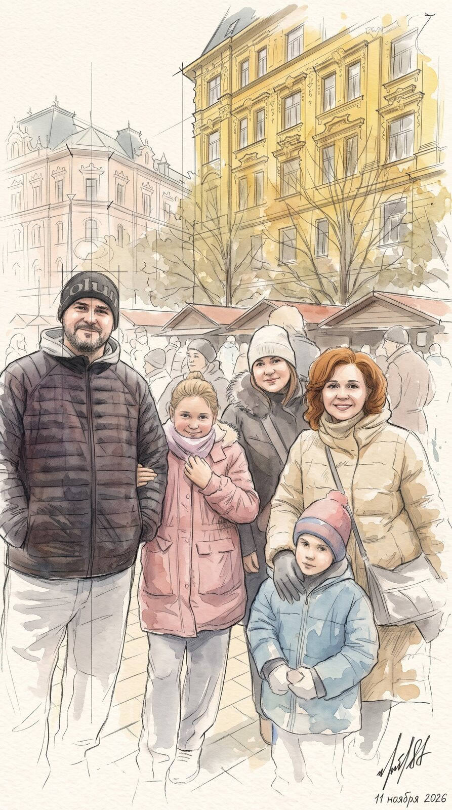
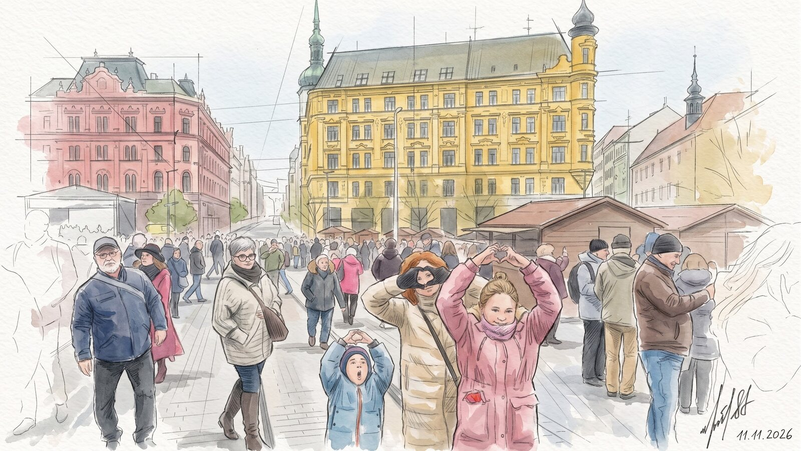
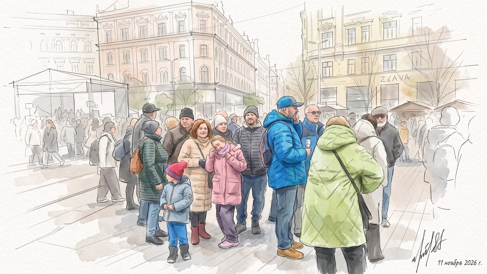
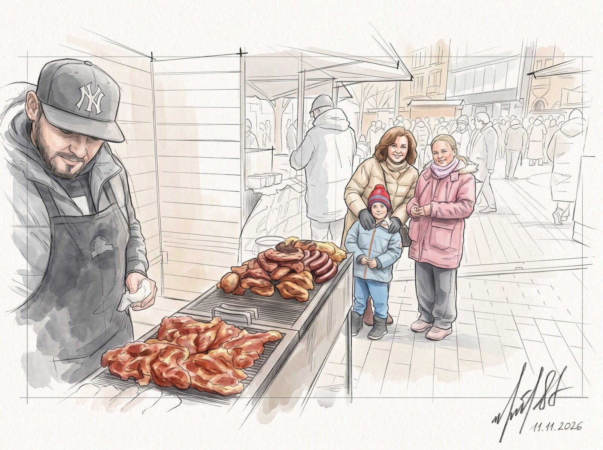
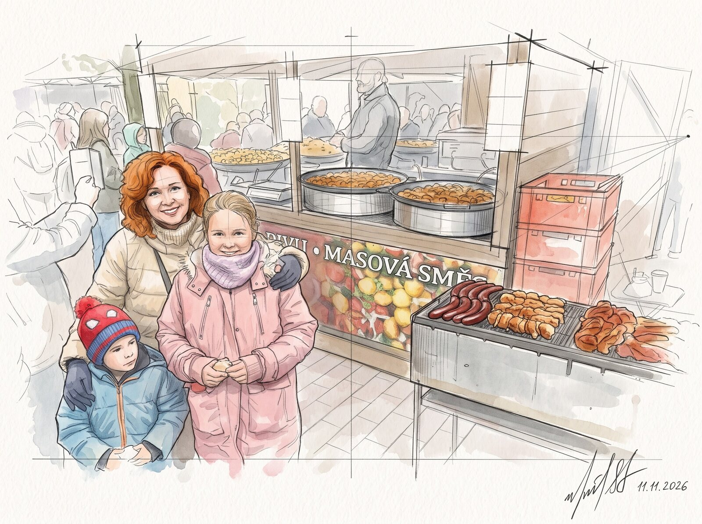
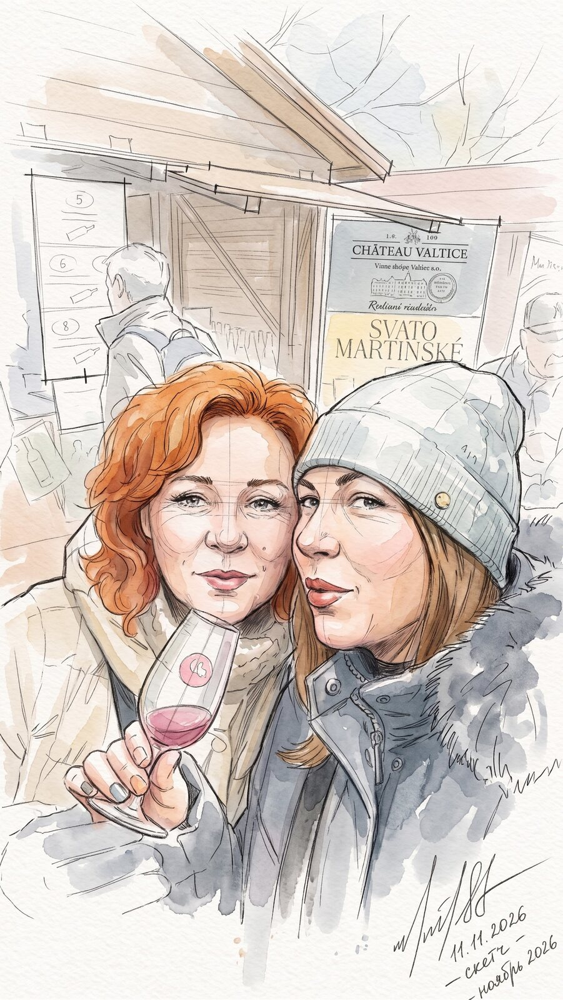
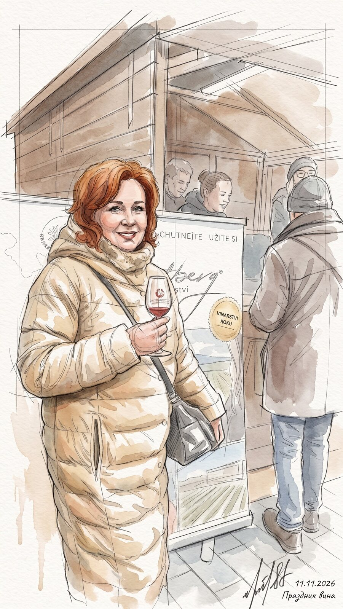
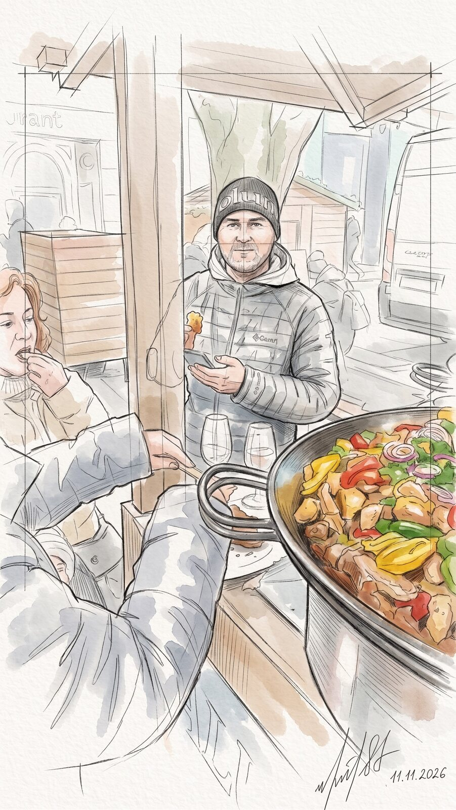
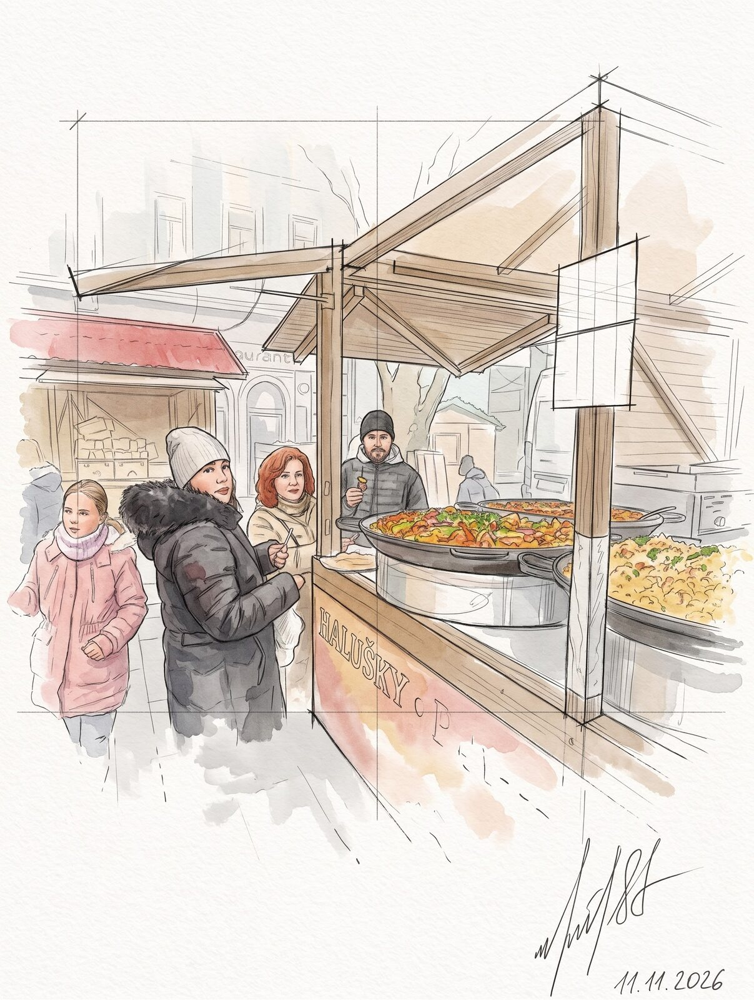

Брно, 11 ноября 2026
Праздник урожая и молодого вина

Праздник на площади
Сегодня в Чехии день святого Мартина, и весь город вышел на площадь. Высокий жёлтый дом с башенками, деревянные домики с угощением, а вокруг столько народу, что не протолкнуться. Мы тоже здесь, всей компанией, в шапках и тёплых куртках.

Настроение такое, что руки сами складываются в сердечко. Малыш в голубой куртке тоже тянет ручки вверх — повторяет за взрослыми.

У гриля
Первым делом идём на запах. Повар в кепке переворачивает на решётке колбаски и румяные куски мяса, дымок поднимается над прилавком. Наши стоят рядом и ждут своей очереди.

У прилавка с надписью Masová směs (Масова смьесь, мясное ассорти) делаем снимок на память: рядом жарятся колбаски, в больших сковородах томится что-то горячее. Дети уже знают, что выбрать.

Молодое вино
А вот и главный герой праздника — Svatomartinské víno (Сватомартинске вино, мартинское молодое вино). Розовое, свежее, в бокалах на тонкой ножке. Пробуем вдвоём, щека к щеке, и решаем, что оно удалось.

С бокалом в руке гулять ещё приятнее. Тёплое пальто, сумка через плечо, улыбка — и праздник вина в самом разгаре.

Огромные сковороды
Дальше сковорода размером с колесо: перец, лук, мясо, всё шкворчит и пахнет так, что пройти мимо невозможно. Берём по тарелке и едим прямо тут, стоя у прилавка.

А напоследок домик с вывеской Halušky (Галушки, картофельные клёцки). Компания собирается у прилавка, кто-то уже жуёт, кто-то ещё выбирает. Сытый, весёлый и очень вкусный день.
